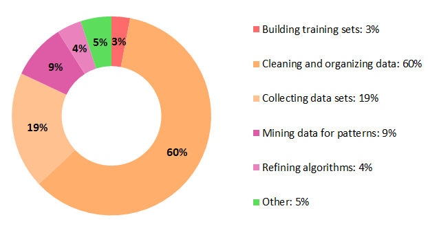
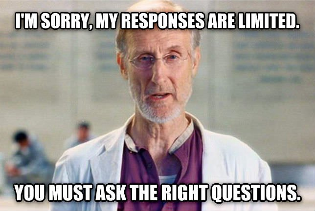
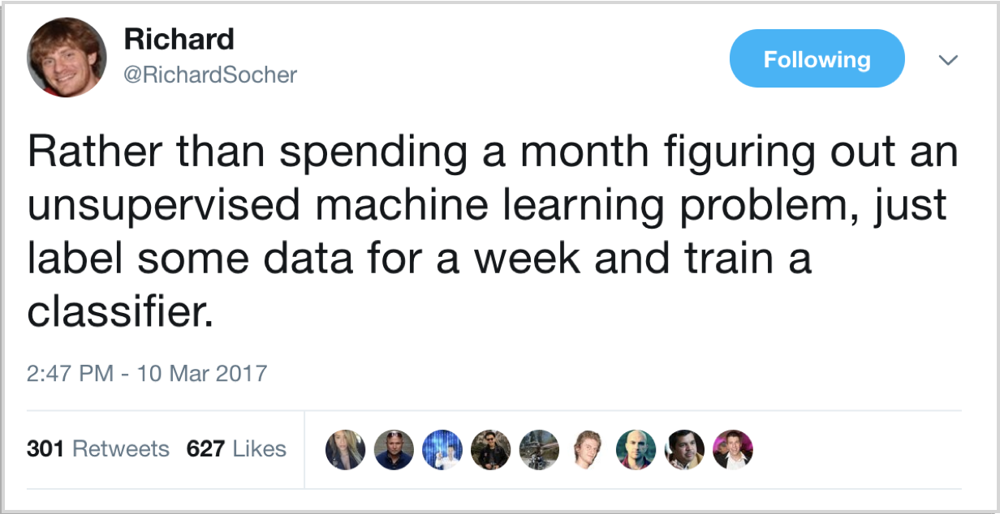
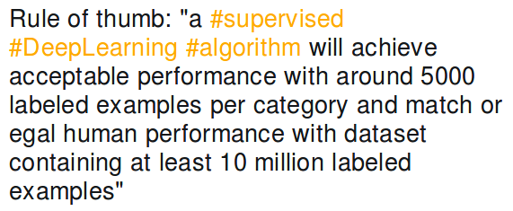
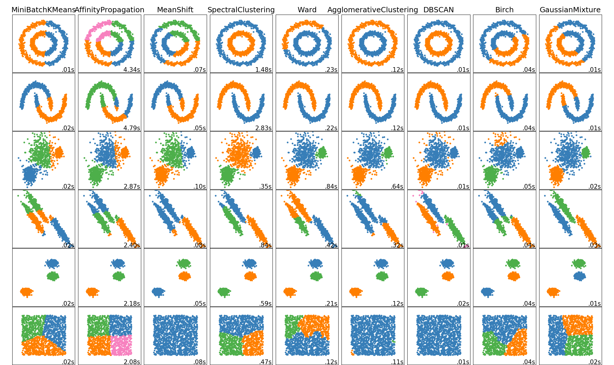
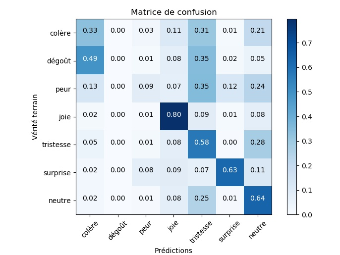
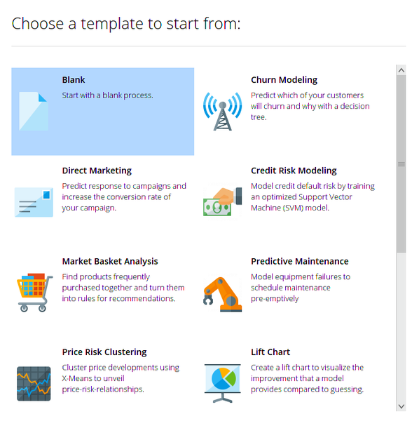
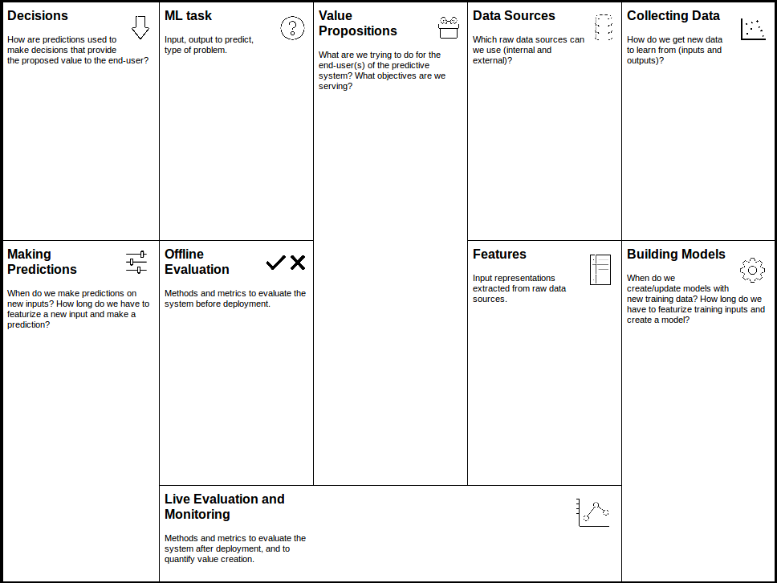

Smart import, un exemple concret d'utilisation de machine learning

Qui suis-je ?
 Expert Drupal - SEO - ML
Expert Drupal - SEO - ML
L'instant story-telling
Fin octobre 2017
Mais…

Mi-novembre 2017
Smart Import
Classification supervisée
Détection d'anomalies
C'est quoi un projet de Machine Learning ?
Bien poser le problème
Trouver une stratégie
Avoir les bonnes données
Choisir un algorithme
La partie la plus facile !
X = data
y = classes
algo = cluster.DBSCAN()
algo.fit(X, y)
algo.predict(X)
Et pour le Deep Learning ?
model = Sequential()
model.add(Couche())
model.add(Couche())
model.add(Couche())
model.compile()
model.fit(X, y)
Paramétrer le modèle vous même, c'est dépassé !
Vive l'"Automatic Machine Learning"
Auto-sklearn pour scikit-learn
(calcul même les pipelines !)
Hyperas pour Keras
Évaluer votre modèle ! 
Notre pile logicielle
Numpy, Pandas, Matplotlib pour le traitement des données
Scikit-learn

Deep Learning
Keras
Surcouche à Tensorflow
Pour commencer ?
Et, bien sûr, un canvas…
Des ressources pour aller plus loin ?
- Machine Learning is fun !, une série d'articles
- Le nouveau cours de Google
- L'état de l'art du traitement d'images
- L'état de l'art du traitement de texte
- Towards Data Science, un très bon blog